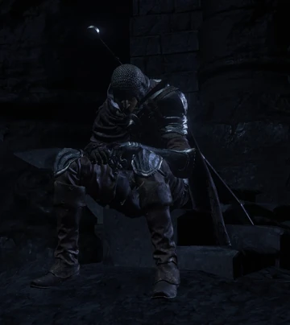

← Volver
← Volver
Hawkwood (también conocido como Hawkwood el Desertor) es un NPC de Dark Souls III. Es un fugitivo de ambos la Legión de No Muertos de Farron y de sus propios deberes como No Encendido, admirando el poder de los dragones. Es buscado por desertar de la legión y cree que no es adecuado ni merecedor de buscar a los Señores de Ceniza. Consecuentemente, reside en el Santuario del Enlace de Fuego pero desaparece una vez que derrotas a los Vigilantes del Abismo.
| Hawkwood lista de objetos disponibles | Variante | Cantidad | Probabilidades | Suerte |
|---|---|---|---|---|
| Gema Pesada | No | 1 | 10% | No |
Diálogo del primer encuentro
"Ahhh, ¿otro más, despertando del sueño de la muerte? Bueno, no estás solo. Los Insensibles no valemos nada. Ni siquiera podemos morir bien. Me da escalofríos. Y quieren que busquemos a los Señores de la Ceniza y los devolvamos a sus tronos de fundición. Pero estamos hablando de verdaderas leyendas con el temple para conectar con el fuego. No somos dignos de lamerles las botas. ¿No crees? (Risa diabólica)."
Diálogo sobre la tumba
"Pobres almas desdichadas... Ya sean señores o leyendas, la maldición no tiene piedad. Qué vergüenza."
Seleccionar "hablar" (ya sea luego de derrotar a Vordt o después de alzar el estandarte)
"Oh, ¿aún no te rindes, eh? Bien. La Guardiana del Fuego debe estar encantada. Pero ¿qué sabes realmente de estos Señores de la Ceniza, estas supuestas leyendas? Tomemos a Aldrich, por ejemplo. Un clérigo de verdad, pero desarrolló la costumbre de devorar hombres. Comió tantos que se hinchó como un cerdo ahogado, y luego se ablandó hasta convertirse en lodo, así que lo encerraron en la Catedral de las Profundidades. Y lo nombraron Señor de la Ceniza. No por su virtud, sino por su poder. Así es un señor, supongo. Pero pregunto: ¿Tenemos alguna posibilidad? "
Seleccionar "hablar" justo después
"Al pie del Castillo de Lothric, un antiguo sendero aún discurre bajo la torre del Asentamiento de los No Muertos. Se usaba para transportar sacrificios a la Catedral de las Profundidades. Deberías ver adónde conduce ... si tienes las bolas para ello."
Seleccionar "hablar" (ya sea luego de derrotar al Gran Árbol Corrompido o después de encender la primera hoguera en el Camino de los Sacrificios)
"¿Aún no te has rendido? Entonces eres más atrevido de lo que pensaba. Puedes aprovechar esto mejor. (Le da una gema pesada) No la necesito. No ahora que me he ido."
Al seleccionar "hablar" justo después
"La Legión de No Muertos de Farron es una caravana de No Muertos. Juramentada por la sangre del lobo para contener el Abismo, la Legión enterrará un reino a la primera señal de exposición. Una pandilla alegre, la verdad. Admitir en la Legión es cuestión de ceremonia. Dentro de su fortaleza, apagar las llamas de tres altares abre la puerta a la sangre del lobo. Parece que incluso los malditos No Muertos quieren creer que son especiales. Me dan pena las almas arrepentidas."
Cuando es atacado en el Santuario del Enlace de Fuego pero aún no se vuelve hostil
"¿Qué pasa ahora? (una vez) "¡Basta, tonto!" (dos veces) "¡¿Qué demonios te pasa?!" (tres veces)"
Al volverse hostil en el Santuario del Enlace de Fuego
"Soy un desertor, lo sé. Pero aún me queda mucha fuerza para luchar…"
Al matar al jugador
"Nunca llegaremos a nada, ni tú, ni yo…”"
Sobre la muerte
"Saliste arrastrándote de la tierra, por el amor de Dios... Vamos, enfócate tanto como quieras."
Cuando lo encuentras en el Mausoleo de Farron
"Debí haberlo sabido. Bueno, he decidido dejar de huir de mi destino. Odienme cuanto quieran, tomaré lo que los hace dragón."
Al matar al jugador en el Mausoleo de Farron
"Ódiame todo lo que quieras, pero soy el verdadero dragón… (toma la piedra Torso del Dragón Centelleante)"
Acercándose a él luego de haber sido asesinado por su mano en el Mausoleo de Farron
"Ah, ahí estás. Esto no será un robo insignificante. Como el verdadero dragón, tomaré lo que me corresponde por derecho."
Cuando es asesinado por el jugador en el Mausoleo de Farron
"Eres un dragón, más dragón que yo." (Suelta la Piedra de Cabeza de Dragón Centelleante, también suelta la Piedra de Torso de Dragón Centelleante si la tomó)"

 ↑
↑